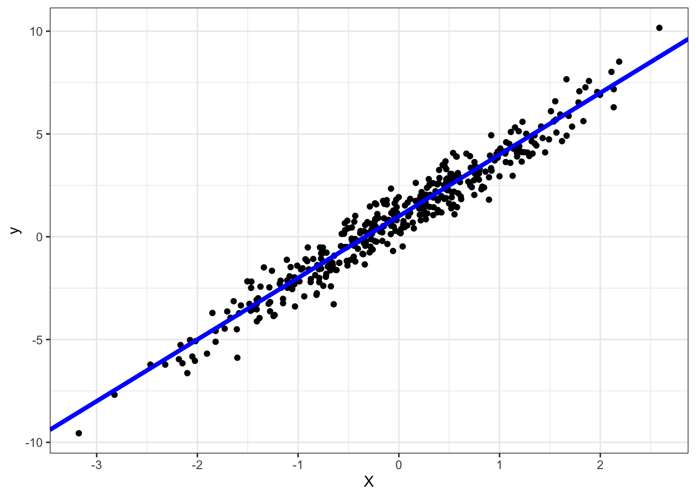

Chapter 7 First order vs. second order representation
7.1 First order vs. second order representation
- Consider the Gaussian linear mixed model - first order (mean) representation:
\[ \begin{align*} \mathbf{y} & = \mathbf{X} \boldsymbol{\beta} + \mathbf{Z} \boldsymbol{\alpha} + \boldsymbol{\varepsilon} \end{align*} \]
- \(\mathbf{X}\) is a set of fixed effect covariates.
- \(\boldsymbol{\beta}\) are regression coefficients.
- \(\mathbf{Z}\) is a set of random effect covariates and/or basis functions.
- \(\boldsymbol{\alpha} \sim \operatorname{N}(\mathbf{0}, \boldsymbol{\Sigma}_{\alpha})\) are random effects.
- \(\boldsymbol{\varepsilon} \sim \operatorname{N}(\mathbf{0}, \sigma^2 \mathbf{I})\)
7.2 First order vs. second order representation
Examples: repeated measures, time series models, spatial models, random effect models.
Different models constructed by different choices of \(\mathbf{Z}\) and \(\boldsymbol{\alpha}\).
7.3 First order vs. second order representation
- First-order (mean) representation
\[ \begin{align*} \mathbf{y} & \sim \operatorname{N} \left(\mathbf{X} \boldsymbol{\beta} + \mathbf{Z} \boldsymbol{\alpha}, \sigma^2 \mathbf{I} \right) \\ \boldsymbol{\alpha} & \sim \operatorname{N} \left( \mathbf{0}, \boldsymbol{\Sigma}_{\alpha} \right) \\ \boldsymbol{\beta} & \sim \operatorname{N} \left( \mathbf{0}, \boldsymbol{\Sigma}_{\beta} \right) \end{align*} \]
- Second order (covariance) representation
\[ \begin{align*} \mathbf{y} & \sim \int \int \operatorname{N} \left(\mathbf{X} \boldsymbol{\beta} + \mathbf{Z} \boldsymbol{\alpha}, \sigma^2 \mathbf{I} \right) \operatorname{N} \left( \mathbf{0}, \boldsymbol{\Sigma}_{\alpha} \right) \operatorname{N} \left( \mathbf{0}, \boldsymbol{\Sigma}_{\beta} \right) \, \mathrm{d} \boldsymbol{\alpha} \, \mathrm{d} \boldsymbol{\beta} \\ & \sim \int \operatorname{N} \left(\mathbf{X} \boldsymbol{\beta}, \sigma^2 \mathbf{I} + \mathbf{Z} \boldsymbol{\Sigma}_{\alpha}\mathbf{Z'} \right) \operatorname{N} \left( \mathbf{0}, \boldsymbol{\Sigma}_{\beta} \right) \, \mathrm{d} \boldsymbol{\beta} \\ & \sim \operatorname{N} \left(\mathbf{0}, \sigma^2 \mathbf{I} + \mathbf{Z} \boldsymbol{\Sigma}_{\alpha}\mathbf{Z'} + \mathbf{X} \boldsymbol{\Sigma}_\beta \mathbf{X}' \right) \end{align*} \]
7.4 First order vs. second order representation
- For Gaussian models, this integration is standard practice – improved mixing, convergence, and efficiency.
For non-Gaussian models, brute force or approximations are used.
Sample the latent \(\boldsymbol{\alpha}\)s and \(\boldsymbol{\beta}\)s directly.
Integrated nested Laplace approximations (INLA).
Replace the non-Gaussian likelihood by an approximating distribution that is Gaussian – Variational Inference.
Congujate recursive Bayesian inference.
7.5 Example: Linear Regression
\[ \begin{align*} \mathbf{y} & \sim \operatorname{N} \left(\mathbf{X} \boldsymbol{\beta}, \sigma^2 \mathbf{I} \right) \\ \boldsymbol{\beta} & \sim \operatorname{N} \left( \mathbf{0}, \boldsymbol{\Sigma}_{\beta} \right) \\ \sigma^2 & \sim \operatorname{Inverse-gamma} \left( \alpha_{\sigma^2}, \beta_{\sigma^2}\right) \end{align*} \]
7.6 Example: Linear Regression

7.7 Example: Linear Regression
- In this example, the analytic solution is known:
\[ \begin{align*} \boldsymbol{\beta} & \sim \operatorname{N} \left( \left( \boldsymbol{\Sigma}_{\beta}^{-1} + \frac{\mathbf{X}\mathbf{X}'}{\sigma^2} \right)^{-1} \left( \frac{\mathbf{X}' \mathbf{y}} {\sigma^2} \right), \left( \boldsymbol{\Sigma}_{\beta}^{-1} + \frac{\mathbf{X}\mathbf{X}'}{\sigma^2} \right)^{-1} \right) \\ \sigma^2 & \sim \operatorname{Inverse-gamma} \left( \alpha_{\sigma^2} + \frac{n} {2}, \beta_{\sigma^2} + \frac{1}{2} \left( \mathbf{y} - \mathbf{X} \boldsymbol{\beta} \right)' \left( \mathbf{y} - \mathbf{X} \boldsymbol{\beta} \right) \right) \end{align*} \]
7.8 Example: Linear Regression
\[ \begin{align*} \mathbf{y} & \sim \int \operatorname{N} \left(\mathbf{X} \boldsymbol{\beta}, \sigma^2 \mathbf{I} \right) \operatorname{N} \left( \mathbf{0}, \boldsymbol{\Sigma}_{\beta} \right) \, \mathrm{d} \boldsymbol{\beta}\\ & \sim \operatorname{N} \left(\mathbf{0}, \sigma^2 \mathbf{I} + \mathbf{X} \boldsymbol{\Sigma}_\beta \mathbf{X}' \right)\\ \sigma^2 & \sim \operatorname{Inverse-gamma} \left( \alpha_{\sigma^2}, \beta_{\sigma^2}\right) \end{align*} \]
7.9 Spatial Data
All data occur at some location is space and time. For know we focus on spatial analyses and will later extend this to spatio-temporal analyses. Let \(\mathcal{D}\) represent the spatial domain and let \(\mathbf{s}\) be a spatial location. In general, we will let \(\mathcal{A} \subset \mathcal{D}\) be a subdomain of the spatial region of \(\mathbf{D}\).
Insert Diagram from class here
7.10 Types of spatial data
There are three primary types of spatial data that we are going to consider
- Geostatistical data
- Occur everywhere
- continuous support
- examples: temperature, precipitation
- Areal data
- Occur only over discrete areas
- can be thought of as an integral of a continuous process over a subdomain \(\mathcal{A} \in \mathcal{D}\)
- examples: cases of a disease by counties, votes in an election by congressional district
- Point process data
- The count and location of the data are random
- examples: tornados, lightning strikes